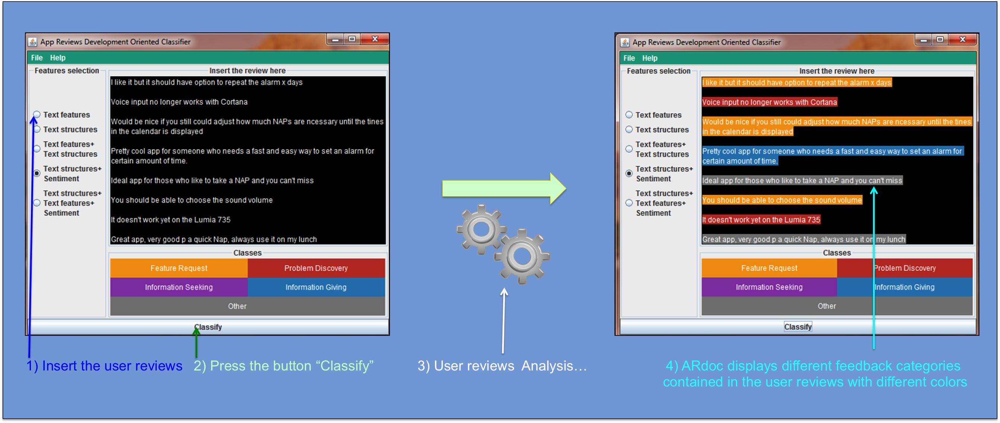
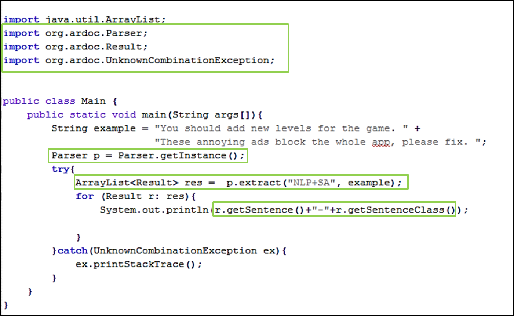
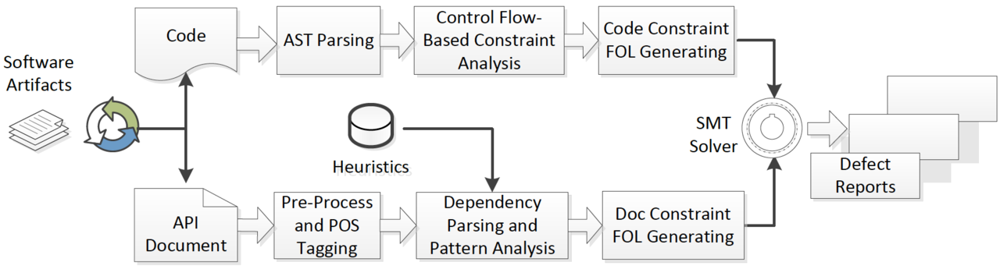

Tools and Datasets
Tools
- LISA
- BECLoMA
- DRONE
-LISA - A tool for Large-Scale, Language-Independent Software Analysis
Datasets, Replication Packages and Appendices
- Replication Package for " An Empirical Investigation of Relevant Changes and Automation Needs in Modern Code Review "
- Replication Package for " Action-based Recommendation in Pull-request Development "
- Replication Package for " User Review-Based Change File Localization for Mobile Applications "
- Replication Package for " Testing with Fewer Resources: An Adaptive Approach to Performance-Aware Test Case Generation "
- Replication Package for " Exploiting Natural Language Structures in Software Informal Documentation "
- Replication Package for "The Cloudification Perspectives of Search-based Software Testing. "
- Replication Package for "Exploring the Integration of User Feedback in Automated Testing of Android Applications. "
- Replication Package for "Redundancy-free Analysis of Multi-revision Software Artifacts "
- Dataset TestDescriber
- Replication Package for: "Analyzing APIs Documentation and Code to Detect Directive Defects"
-Replication Package for "Replicating Parser Behavior using Neural Machine Translation".
- Recommending and Localizing Code Changes for Mobile Apps based on User Reviews: Online Appendix
- Replication Package for "Analyzing Reviews and Code of Mobile Apps for a better Release Planning Organization".
- Replication Package for "What Would Users Change in My App? Summarizing App Reviews for Recommending Software Changes"
- Replication Package for: "A Search-based Training Algorithm for Cost-aware Defect Prediction"
- Appendix for "How Can I Improve My App? Classifying User Reviews for Software Maintenance and Evolution"
DECA (Development Emails Content Analyzer)
|
A java tool to automatically recognize sentences in emails that are relevant in the software engineering domain. Tool descriptionDECA (Development Emails Content Analyzer) is a Java tool to automatically recognize natural language fragments in emails that are relevant in the software engineering domain. Actually, DECA implements an approach which allows to recognize most informative sentences for development purposes by exploiting a set of recurrent natural language patterns that developers often use in such communication channel. DECA purpose is to capture the intent of each informative sentence (requesting a new feature, description of a problem, or proposing a solution) and consequently to allow developers to better manage the information contained in emails. How to use DECADECA Demonstration Video: DECA example of use:
DECA Replication Package DECA Replication paper of the research work: Download (ZIP, 90 KB). DECA_Implemented_Heuristics in the research work: Download Appendix.pdf DECA executable jar The DECA tool with a user-friendly GUI which can be used as a standalone application (JRE 7 or higher required) Download (ZIP, 5151 KB). DECA java API A java API for developers to easily integrate our tool in other java projects (The following picture explains how to use it). Download (ZIP, 5141 KB).
ContributorsAndrea Di Sorbo , University of Sannio, Italy Sebastiano Panichella , University of Zurich, Switzerland Corrado A. Visaggio , University of Sannio, Italy Massimiliano Di Penta , University of Sannio, Italy Gerardo Canfora , University of Sannio, Italy Harald C. Gall , University of Zurich, Switzerland |
YODA (Young and newcOmer Developer Assistant)
An Eclipse Plugin to identify and recommend Mentors in Open Source Projects
Tool description
Yoda (Young and newcOmer Developer Assistant) is an Eclipse plugin that identifies and recommends mentors for newcomers joining a software project. Yoda mines developers' communication (e.g., mailing lists) and project versioning systems to identify mentors using an approach inspired to what ArnetMiner does when mining advisor/student relations. Then, it recommends appropriate mentors based on the specific expertise required by the newcomer. The following video walkthrough shows Yoda in action, illustrating how the tool is able to identify and visualize mentoring relations in a project, and can suggest appropriate mentors for a developer who is going to work on certain source code files, or on a given topic.
Resources
G. Canfora, M. Di Penta, R. Oliveto, S. Panichella. Who is going to Mentor Newcomers in Open Source Projects? In Proceedings of the 20th ACM SIGSOFT International Symposium On Foundations of Software Engineering, North Carolina, USA, 2012. ACM Press.
To download and install Yoda follow the User Guide (for Linux and Windows) YodaIntruction.zip
Alternatively, to avoid any configuration and istallation problem it is available on-line virtual machine having as operating system Windows 7 with the tool YODA already configured and perfectly working with the data of the project "Samba" (https://www.samba.org/). For more information on how to download the virtual machine please send an e-mail at spanichella@gmail.com).
IMPORTANT: The Windows virtual machine has as "user" password "YODA" (the eclipse with YODA pre-installed is placed in the virtual machine in "C:\Users\YODA\Desktop\yoda\eclipse-rcp-indigo-SR2-win32\eclipse").
CODES (mining sourCe cOde Descriptions from developErs diScussions)
An Eclipse plugin to automatically extract method descriptions of Java Systems from discussions in StackOverflow
Tool description
CODES (mining sourCe cOde Descriptions from developErs diScussions) is an Eclipse plugin to automatically extract method descriptions of Java Systems from discussions in StackOverflow. Actually, CODES implements an approach defined in our previous work [2], that automatically extracts method descriptions from developers' communication. CODES considers as good descriptions paragraphs describing methods that obtained the higher score and allows developers to put the chosen description into the code as a Javadoc comment also becoming de facto an API description.
Resources
[2] S. Panichella, J. Aponte, M. Di Penta, A. Marcus, G. Canfora: Mining source code descriptions from developer communications In Proceedings of IEEE 20th International Conference on Program Comprehension (ICPC 2012), pages 63-72, Passau, Germany, June 11-13, 2012. 2012, ISBN 978-1-4673-1216-5
CODES Plugin Download (ZIP, 26231 KB)
User Guide Download (PDF, 488 KB)
ChangeAdvisor: (A Change Requests Recommender Based on Android User Reviews )
Tool descriptionAndroid user reviews often contain precious information that can be profitably used to guide software maintenance activities. Nevertheless, because of their high frequency and lack of textual structure, analyzing the user feedback may result in ChangeAdvisor example of use:
ChangeAdvisor Replication PackageChangeAdvisor Replication paper of the original research work: Download. ChangeAdvisor Full Java VersionAuthors that implemented the full Java version of the tool: Alexander Hofmann, Sebastiano Panichella Repository of ChangeAdvisor (with information on how to download and install it): The ChangeAdvisor tool was migrated completely to Java and we have also implemented a user-friendly GUI to facilate the use of ChangeAdvisor main functionalities: repository link. |
||
ArDoc (App Reviews Development Oriented Classifier)
A Java tool to automatically recognize natural language fragments in user reviews that are relevant for developers to evolve their applications.
Tool description
ARdoc (App Reviews Development Oriented Classifier) is a Java tool that automatically recognizes natural language fragments in user reviews that are relevant for developers to evolve their applications. Specifically, natural language fragments are extracted according to a taxonomy of app reviews categories that are relevant to software maintenance and evolution. The categories were defined in our previous paper entitled " How Can I Improve My App? Classifying User Reviews for Software Maintenance and Evolution" ) and are: (i) Information Giving, (ii) Information Seeking, (iii) Feature Request and (iv) Problem Discovery. ARdoc implements an approach that merges three techniques: (1) Natural Language Processing, (2) Text Analysis and (3) Sentiment Analysis to automatically classify app reviews into the proposed categories. The purpose of ARdoc is to capture informative user reviews (requesting a new feature, description of a problem, or proposing a solution) and consequently to allow developers to better manage the information contained in user reviews.
How to use ARdoc
ARdoc Demonstration Video:
ARdoc Screenshot:
- 
Resources
Sebastiano Panichella, Andrea Di Sorbo, Emitza Guzman, Corrado Aaron Visaggio, Gerardo Canfora and Harald Gall: How Can I Improve My App? Classifying User Reviews for Software Maintenance and Evolution. In Proceedings of the 31st International Conference on Software Maintenance and Evolution (ICSME 2015), Bremen, Germany, Sep 29 - Oct 1, 2015.
Appendix of the ARdoc evaluation:
Pdf of the Appendix.
ARdoc package:
The ARdoc tool with a user-friendly GUI (JRE 7 or higher required). Please read the README.txt file contained in the downloaded file to learn how to run the GUI. Download
Demo data set:
Some user reviews of "PowernAPP" app genereously made available by Benjamin Sautermeister. More info can be found at http://bsautermeister.de/powernapp/.
ARdoc java API
A java API for developers to easily integrate our tool in other java projects (The following picture explains how to use it). Download
- 
SURF: Summarizer of User Reviews Feedback
A Java tool to automatically (i) analyze the useful information contained in app reviews for developers interested in performing software maintenance and evolution activities and (ii) distilling actionable change tasks for improving mobile applications.
Tool description
Continuous Delivery (CD) enables mobile developers to release small, high quality chunks of working software in a rapid manner. However, faster delivery and a higher software quality do neither guarantee user satisfaction nor positive business outcomes. Previous work demonstrates that app reviews may contain crucial information that can guide developer's software maintenance efforts to obtain higher customer satisfaction. However, previous work also proves the difficulties encountered by developers in manually analyzing this rich source of data, namely (i) the huge amount of reviews an app may receive on a daily basis and (ii) the unstructured nature of their content. In this paper, we introduce SURF (Summarizer of User Reviews Feedback) a tool able to (i) analyze and classify the information contained in app reviews and (ii) distill actionable change tasks for improving mobile applications. Specifically, SURF performs a systematic summarization of thousands of user reviews through the generation of an interactive, structured and condensed agenda of recommended software changes. An end-to-end evaluation of SURF, involving 2622 reviews related to 12 different mobile applications, demonstrates the high accuracy of SURF in summarizing user reviews content. In evaluating our approach we also involve the original developers of some analyzed apps, who confirm the practical usefulness of the software changes recommended by SURF.
Screenshot of the process implemented by SURF:

How to use SURF:
SURF Demonstration Video:
Resources:
Andrea Di Sorbo, Sebastiano Panichella, Carol Alexandru, Junji Shimagaki, Aaron Visaggio, Gerardo Canfora and Harald Gall : What Would Users Change in My App? Summarizing App Reviews for Recommending Software Changes 24th ACM SIGSOFT International Symposium on the Foundations of Software Engineering (FSE 2016). Seattle, WA, USA. 
SURF utilities:
-- "App Reviews Extractor": an utility for automatically extract and store, in an XML file, data related to user reviews of the specified mobile application.
A new and faster (command line) version of the App Review Extractor is available here (developed in the work "Android Apps and User Feedback: a Dataset for Software Evolution and Quality Improvement"). To run this command line version it is required the following command:
java -jar reviewCrawler.jar extractor=reviews app=<ID-APP-ON-GOOGLEPLAY>
Example for the app:
https://play.google.com/store/apps/details?id=com.amaze.filemanager&hl=en is java -jar reviewCrawler.jar extractor=reviews app=com.amaze.filemanager
-- "App Reviews Analyzer": this utility consists in a command line tool which take in input the output of the XML file data generated by the "App Reviews Extractor" and summarizes its content.
The two utilities can be download and installed from our online repository.
Demo data set:
We share in our online repository some user reviews data (in XML format) of mobile apps for quickly use the "App Reviews Analyzer".
TestDescriber
Replication Package for: "The Impact of Test Case Summaries on Bug Fixing Performance: An Empirical Investigation"Abstract:
Automated test generation tools have been widely investigated with the goal of reducing the cost of testing activities. However, generated tests have been shown not to help developers in detecting and finding more bugs even though they reach higher structural coverage compared to manual testing. The main reason is that generated tests are difficult to understand and maintain. Our paper proposes an approach, coined TestDescribe, which automatically generates test case summaries of the portion of code exercised by each individual test, thereby improving understandability. We argue that this approach can complement the current techniques around automated unit test generation or search-based techniques designed to generate a possibly minimal set of test cases. In evaluating our approach we found that (1) developers find twice as many bugs, and (2) test case summaries significantly improve the comprehensibility of test cases, which are considered particularly useful by developers.

This page provides the replication package with (i) material and working data sets of our study, (ii) complete results of the survey; and (iii) rawdata for replication purposes and to support future studies. A detailed description of the contents is included in README.txt.
Download the Survey sent to developers that participated to the study
Contributors
Sebastiano Panichella University of Zurich, Switzerland Annibale Panichella, Delft University of Technology, Netherlands Moritz Beller, Delft University of Technology, Netherlands Andy Zaidman , Delft University of Technology, Netherlands Harald C. Gall , University of Zurich, Switzerland DRONE-tool:
A Tool to Detect and Repair Directive Defects in Java APIs Documentation
Tool description
Application programming interfaces (APIs) documentation is the official reference of the APIs. Defects in API documentation pose serious hurdles to the comprehension and usage of APIs. In this paper, we present DRONE (Detector and Repairer of documentation defects), a tool that automatically detects the directive defects in APIs documents and recommends repair solutions to fix them. Particularly, DRONE focuses on four defect types related to parameter usage constraints. To achieve this, DRONE leverages techniques from static program analysis, natural language processing and logic reasoning. The implementation is based on an Eclipse-plugin architecture, which provides an integrated user interface. Extensive experiments demonstrate the efficacy of the tool.
Screenshot of the process implemented by DRONE:
- 
Contributors:
Yu Zhou, Xin Yan, Taolue Chen, Sebastiano Panichella, Harald Gall
How to use DRONE:
DRONE Demonstration Video:
References:
[C27] Y. Zhou, R. Gu, T. Chen, Z. Huang, Sebastiano Panichella, Harald Gall: Analyzing APIs Documentation and Code to Detect Directive Defects. Proceedings of the 39th IEEE International Conference on Software Engineering (ICSE 2017). Buenos Aires, Argentina. RANK: A* 


[C40] Yu Zhou, Changzhi Wang, Xin Yan, Taolue Chen, Sebastiano Panichella, Harald Gall: Automatic Detection and Repair Recommendation of Directive Defects in Java API Documentation. Transaction on Software Engineering. To appear.
DRONE Github Repository:
-- https://github.com/DRONE-Proj/DRONE DRONE is integrated into a framework, which can automatically detect and repair defects of API documents by leveraging techniques from program analysis, natural language processing and constraint solving. Our approach includes several parts as follows: - Leverage static analysis techniques for program comprehension - Leverage domain specific, pattern based natural language processing (NLP) techniques for document comprehension - The above two steps' analysis results are presented in the form of first-order logic (FOL) formulae - The generated FOL formulae are then fed into the SMT solver Z3 to detect the potential defects in case of inconsistency - In the end, a template based patch will be recommended to users, suggesting how to repair the defects Our approach mainly handles four types of document defects, which include null not allowed, null allowed, range limitation and type restriction. We summarize more than 60 heuristics on the typical descriptions of API usage constraints in documents, which could be reused across different projects. DRONE generates some templates by analyzing both extracted code constraints and document patterns for each of the four constraints types.
On request, we provide DRONE pre-installed in a Virtual Machine (VM).
(send an e-mail to zhouyu@nuaa.edu.cn or spanichella@gmail.com to obtain the VM)API-Document Defect Detection
Replication Package for: "Analyzing APIs Documentation and Code to Detect Directive Defects"Abstract
Application Programming Interface (API) documents represent one of the most important references for API users. However, it is frequently reported that the documentation is inconsistent with the source code and deviates from the API itself. Such inconsistencies in the documents inevitably confuse the API users hampering considerably their API comprehension and the quality of software built from such APIs. In this paper, we propose an automated approach to detect defects of API documents by leveraging techniques from program comprehension and natural language processing. Particularly, we focus on the directives of the API documents which are related to parameter constraints and exception throwing declarations. A first-order logic based constraint solver is employed to detect such defects based on the obtained analysis results. We evaluate our approach on parts of well documented JDK 1.8 APIs. Experiment results show that, out of around 2000 API usage constraints, our approach can detect 1158 defective document directives, with a precision rate of 81.6%, and a recall rate of 82.0%, which demonstrates its practical feasibility.
This page provides the replication package with (i) the material and working data sets of our study (e.g., including input data, and output defective reports); (ii) NLP patterns and the defined NLP heuristics.
Contributors:
Y. Zhou, R. Gu, T. Chen, Z. Huang, Sebastiano Panichella, Harald Gall